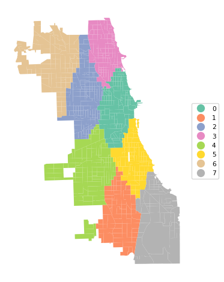
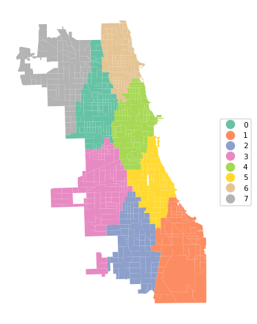
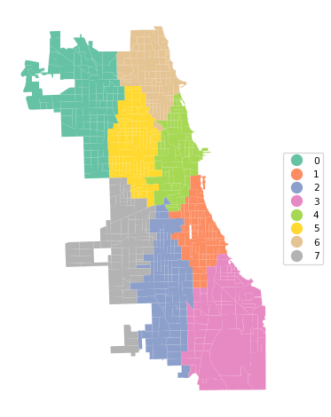
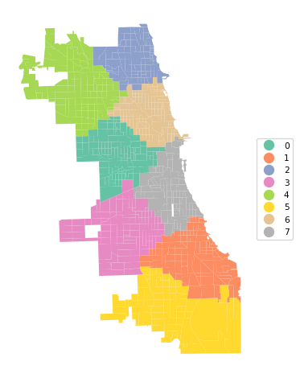

import geopandas as gpd
import numpy as np
import kmedoids
from sklearn.preprocessing import StandardScaler
from sklearn.metrics import pairwise_distances
from spatial_cluster_helper import ensure_datasets, cluster_stats, \
cluster_fit, cluster_map9 Advanced Clustering Methods
Chapter 7 of the GeoDa Cluster Book considers two more advanced partitioning clustering techniques. The first, K-Medians, is a straightforward variant on K-Means. It operates in exactly the same manner, except that the representative center of each cluster is the median instead of the mean.
The second method is similar to K-Medians and is often confused with it. K-Medoids is a method where the center of each cluster is an actual cluster member, in contrast to what holds for both K-Means and K-Medians.
Both methods operate in largely the same manner as K-Means, but they differ in the way the central point of each cluster is defined and the manner in which the nearest points are assigned.
Scikit-learn currently does not have a built-in class for either K-Medians or K-Medoids. However, a separate kmedoids package is available that implements a range of algorithms for K-Medoids, but not for K-Medians (https://python-kmedoids.readthedocs.io/en/latest/). We therefore only consider K-Medoids.
In addition to kmedoids, we again use StandardScaler from sklearn.preprocessing to standardize the variables. In addition, we will also need pairwise_distances from sklearn.metrics. Finally, we use ensure_datasets, cluster_stats, cluster_fit and cluster_map from the spatial-cluster-helper package. We only rely on geopandas and numpy for other manipulations. All the other required functionality is covered by the various utility functions.
We continue to illustrate the clustering methods with the Chi-SDOH data set for Chicago census tracts. However, to highlight the special nature of K-Medoids, we carry out the clustering on the centroids of the census tracts.
Required Packages
geopandas, numpy, kmedoids, sklearn.preprocessing, sklearn.metrics, spatial-cluster-helper
Required Data Sets
Chi-SDOH
9.1 Preliminaries
9.1.1 Import Required Modules
9.1.2 Load Data
We read the data from the Chi_SDOH.shp shape file and carry out a quick check of its contents.
# Setting working folder:
#path = "/your/path/to/data/"
path = "./datasets/"
# Select the Chicago census tract data:
shpfile = "Chi-SDOH/Chi-SDOH.shp"
# Load the data:
ensure_datasets(shpfile, folder_path = path)
dfs = gpd.read_file(path + shpfile)
print(dfs.shape)
dfs.head(3)(791, 56)| OBJECTID | Shape_Leng | Shape_Area | TRACTCE10 | geoid10 | commarea | ChldPvt14 | EP_CROWD | EP_UNINSUR | EP_MINRTY | ... | ForclRt | EP_MUNIT | EP_GROUPQ | SchHP_Mi | BrownF_Mi | card | cpval | COORD_X | COORD_Y | geometry | |
|---|---|---|---|---|---|---|---|---|---|---|---|---|---|---|---|---|---|---|---|---|---|
| 0 | 1 | 22777.477721 | 2.119089e+07 | 842400.0 | 1.703184e+10 | 44.0 | 30.2 | 2.0 | 18.6 | 100.0 | ... | 0.0 | 6 | 0.0 | 0.323962 | 0.825032 | 0.0 | 0.0 | 1176.183467 | 1849.533205 | POLYGON ((1177796.742 1847712.428, 1177805.261... |
| 1 | 2 | 16035.054986 | 8.947394e+06 | 840300.0 | 1.703184e+10 | 59.0 | 38.9 | 4.8 | 25.2 | 85.9 | ... | 0.0 | 2 | 0.0 | 2.913039 | 0.833580 | 0.0 | 0.0 | 1161.787888 | 1882.078567 | POLYGON ((1163591.927 1881471.238, 1163525.437... |
| 2 | 3 | 15186.400644 | 1.230614e+07 | 841100.0 | 1.703184e+10 | 34.0 | 40.4 | 4.9 | 32.1 | 95.6 | ... | 0.0 | 42 | 0.1 | 1.534987 | 0.245875 | 0.0 | 0.0 | 1174.481923 | 1889.069999 | POLYGON ((1176041.55 1889791.988, 1176042.377 ... |
3 rows × 56 columns
# the full set of variables
print(list(dfs.columns))['OBJECTID', 'Shape_Leng', 'Shape_Area', 'TRACTCE10', 'geoid10', 'commarea', 'ChldPvt14', 'EP_CROWD', 'EP_UNINSUR', 'EP_MINRTY', 'Ovr6514P', 'EP_AGE17', 'EP_DISABL', 'EP_NOHSDP', 'EP_LIMENG', 'EP_SNGPNT', 'Pov14', 'EP_PCI', 'Unemp14', 'EP_NOVEH', 'FORCLRISK', 'HealthLit', 'CarC14P', 'CAR', 'NOCAR', 'CTA14P', 'CTA', 'CmTm14', 'Undr514P', 'Wht14P', 'WHT50PCT', 'Wht', 'Blk14P', 'BLCK50PCT', 'Blk', 'Hisp14P', 'HISP50PCT', 'Hisp', 'Pop2014', 'PDENS14', 'MEANMI_07', 'MEANMI_11', 'MEANMI_14', 'FACHANGE', 'PCRIMERT15', 'VCRIMERT15', 'ForclRt', 'EP_MUNIT', 'EP_GROUPQ', 'SchHP_Mi', 'BrownF_Mi', 'card', 'cpval', 'COORD_X', 'COORD_Y', 'geometry']9.1.3 Variables - Census Tract Centroids
We follow the illustration in Chapter 7 of the GeoDa Cluster Book and use the centroids of the census tracts for our example. This illustrates the similarity of K-Medoids to the solution of an (unweighted) facility location-allocation problem.
We use the GeoPandas centroid attribute applied to our geodataframe (dfs), then extract the x and y coordinates and add them as new variables. We rescale them by 1000 to keep the distance units manageable.
Finally, we create the data frame data_cluster that contains just the centroids and compute some descriptive statistics.
cent = dfs.centroid
dfs['X'] = cent.x / 1000
dfs['Y'] = cent.y / 1000
data_cluster = dfs[['X','Y']]
data_cluster.describe()| X | Y | |
|---|---|---|
| count | 791.000000 | 791.000000 |
| mean | 1163.015429 | 1891.993831 |
| std | 15.921978 | 32.441766 |
| min | 1116.485166 | 1815.974666 |
| 25% | 1152.687269 | 1864.475054 |
| 50% | 1163.879674 | 1896.433233 |
| 75% | 1173.499461 | 1919.530711 |
| max | 1203.419742 | 1951.021208 |
9.1.4 Standardization
As in the previous Chapters, we compute the rescaling factor to retain compatibility with the results in GeoDa.
n = data_cluster.shape[0]
nn = np.sqrt((n-1.0)/n)9.2 K-Medoids
K-Medoids attempts to minimize the sum of distances from the observations in each cluster to a representative center for that cluster. In contrast to what is the case for K-Means, this center is one of the observations. K-Medoids works with any dissimilarity matrix, especially with a distance matrix based on a Manhattan distance metric, which is less affected by outliers.
The kmedoids package implements several algorithms to find the cluster solution, all refinements of the original PAM method (partitioning around medoids) of Kaufman and Rousseeuw (2005).
We compare the results of pam, fastpam1 and fasterpam. We first use the coordinates in standardized form, rescaled for compatibility with GeoDa. There are two ways in which these algorithms can be invoked. One way is directly as one of the methods supported by kmedoids, the other uses an interface like scikit-learn, which is a little more cumbersome (see details in the documentation). We illustrate the former.
9.2.1 Data Preparation
We start by transforming the coordinates with StandardScaler and rescaling them for compatibility with GeoDa. We also set the number of clusters (n_clusters) to 8.
As a final initalization, we set up the distance matrix using Manhattan distances with pairwise_distances from sklearn.metrics, to which we pass metric = 'manhattan' (the default is Euclidean distance, which is less appropriate for K-Medoids).
X0 = StandardScaler().fit_transform(data_cluster)
X = X0 * nn
n_clusters = 8
dist_X = pairwise_distances(X, metric = 'manhattan')9.2.2 PAM
All the PAM methods take as argument a distance matrix, diss, the number of clusters, medoids, and, optionally, the maximum number of iterations (iter), the initialization method (init equal to 'build' as the default), and a random_state, i.e., a seed for the random number generator. The default is None, but we recommend setting a seed to ensure reproducibility.
The original PAM algorithm is invoked as kmedoids.pam. We pass the distance matrix, the number of clusters and the random seed.
Several results are provides as attributes of the K-medoids solution:
- the cluster labels as
labels - the observation numbers of the medoid centers as
medoids - the number of iterations as
n_iter - the number of swaps as
n_swap
We also summarize the cluster membership using our cluster_stats helper function.
kmedoids_instance = kmedoids.pam(dist_X, n_clusters,
random_state = 123456789)
cluster_labels = kmedoids_instance.labels
print("Medoids:", kmedoids_instance.medoids)
print("Iterations:", kmedoids_instance.n_iter)
print("Swaps:", kmedoids_instance.n_swap)
c_stats = cluster_stats(cluster_labels)Medoids: [513 148 413 549 753 386 305 464]
Iterations: 10
Swaps: 9
Labels Cardinality
0.0 113.0
1.0 76.0
2.0 146.0
3.0 111.0
4.0 109.0
5.0 89.0
6.0 88.0
7.0 59.09.2.2.1 Silhouette scores
Whereas we can (and will) compute the usual cluster fit measures with the cluster_fit helper function, the squared Euclidean distance metric is not the one used in the objective function for the PAM algorithms. A more appropriate indicator is the silhouette coefficient, based on the distance metric used in the algorithm (whatever is passed as the distance matrix). This is given by kmedoids.silhouette method. It takes the distance matrix and cluster labels as arguments and returns a tuple. This may be a bit confusing, since the default setting for the third argument, samples is False, which does not return the distances for each observation. However, the returned object remains a tuple, with an empty second item. The first element is the average silhouette score. In GeoDa, this is called the ratio of total within to total sum of distances. A smaller value indicates a closer fit.
sil = kmedoids.silhouette(dist_X, cluster_labels, samples = False)
print("Average silhouette score:", np.round(sil[0], 4))Average silhouette score: 0.35389.2.2.2 Cluster fit
For comparison purposes, we summarize the classic BSS/TSS measures of fit with our cluster_fit helper function.
clusfit = cluster_fit(data = data_cluster, clustlabels = cluster_labels,
correct = True, n_clusters = n_clusters)
Total Sum of Squares (TSS): 1579.9999999999995
Within-cluster Sum of Squares (WSS) for each cluster: [23.144 18.348 34.334 17.362 46.75 13.519 30.243 15.738]
Total Within-cluster Sum of Squares (WSS): 199.438
Between-cluster Sum of Squares (BSS): 1380.562
Ratio of BSS to TSS: 0.8749.2.2.3 Cluster map
Finally, we create the cluster map with cluster_map.
cluster_map(dfs, cluster_labels, figsize = (5, 5),
title="", cmap='Set2', legend_fontsize=8)

The results of the various PAM algorithms are very sensitive to initial conditions as well as the implementation of the algorithm. We cannot illustrate all the permutations of starting values and algorithms, but just repeat the process with the same settings as before for fastpam1 and fasterpam. We report the cluster makeup, silhouette score, measures of fit and show the cluster map for each option.
9.2.3 FASTPAM1
kmedoids_instance2 = kmedoids.fastpam1(dist_X, n_clusters,
random_state = 123456789)
cluster_labels2 = kmedoids_instance2.labels
print("Medoids:", kmedoids_instance2.medoids)
print("Iterations:", kmedoids_instance2.n_iter)
print("Swaps:", kmedoids_instance2.n_swap)
c_stats = cluster_stats(cluster_labels2)
sil = kmedoids.silhouette(dist_X, cluster_labels2, samples = False)
print("Average silhouette score:", np.round(sil[0], 4))
clusfit = cluster_fit(data = data_cluster, clustlabels = cluster_labels2,
correct = True, n_clusters = n_clusters)Medoids: [344 464 524 765 513 386 549 305]
Iterations: 28
Swaps: 27
Labels Cardinality
0.0 131.0
1.0 61.0
2.0 86.0
3.0 110.0
4.0 116.0
5.0 90.0
6.0 111.0
7.0 86.0
Average silhouette score: 0.3501
Total Sum of Squares (TSS): 1579.9999999999995
Within-cluster Sum of Squares (WSS) for each cluster: [27.192 16.667 23.181 43.82 24.358 14.155 17.362 29.302]
Total Within-cluster Sum of Squares (WSS): 196.038
Between-cluster Sum of Squares (BSS): 1383.962
Ratio of BSS to TSS: 0.876cluster_map(dfs, cluster_labels2, figsize = (5, 5),
title="", cmap='Set2', legend_fontsize=8)

The results differ slightly, with a marginally better (smaller) silhouette score (0.350 vs 0.354), different medoid centers and a slightly altered cluster map.
9.2.4 FASTERPAM
kmedoids_instance3 = kmedoids.fasterpam(dist_X, n_clusters,
random_state = 123456789)
cluster_labels3 = kmedoids_instance3.labels
print("Medoids:", kmedoids_instance3.medoids)
print("Iterations:", kmedoids_instance3.n_iter)
print("Swaps:", kmedoids_instance3.n_swap)
c_stats = cluster_stats(cluster_labels3)
sil = kmedoids.silhouette(dist_X, cluster_labels3, samples = False)
print("Average silhouette score:", np.round(sil[0], 4))
clusfit = cluster_fit(data = data_cluster, clustlabels = cluster_labels3,
correct = True, n_clusters = n_clusters)Medoids: [353 386 423 482 607 295 600 781]
Iterations: 3
Swaps: 34
Labels Cardinality
0.0 109.0
1.0 80.0
2.0 99.0
3.0 80.0
4.0 93.0
5.0 128.0
6.0 115.0
7.0 87.0
Average silhouette score: 0.3476
Total Sum of Squares (TSS): 1579.9999999999995
Within-cluster Sum of Squares (WSS) for each cluster: [41.116 10.472 27.344 29.534 16.387 22.832 20.861 31.432]
Total Within-cluster Sum of Squares (WSS): 199.978
Between-cluster Sum of Squares (BSS): 1380.022
Ratio of BSS to TSS: 0.873cluster_map(dfs, cluster_labels3, figsize = (5, 5),
title="", cmap='Set2', legend_fontsize=8)

9.2.5 Using Actual Coordinates
The standardization of the x-y coordinates induces a compression of the distances in the largest direction. Since both standardized variables have a variance of 1, this will yield a different transformation of actual distances when the horizontal and vertical dimension of the map are not the same. This is clearly not the case in Chicago, with a much longer vertical than horizontal dimension. Therefore, it is recommended to not standardize coordinates when the goal is to use actual geographical distances. This is further illustrated in our discussion of spatialized cluster methods in Chapter 11.
To illustrate the effect of this, we re-run the analysis for untransformed coordinates. All the steps are the same as before, except for the use of different x-y coordinates.
dist_X = pairwise_distances(data_cluster, metric = 'manhattan')
kmedoids_instance4 = kmedoids.pam(dist_X, n_clusters,
random_state = 123456789)
cluster_labels4 = kmedoids_instance4.labels
print("Medoids:", kmedoids_instance4.medoids)
print("Iterations:", kmedoids_instance4.n_iter)
print("Swaps:", kmedoids_instance4.n_swap)
c_stats = cluster_stats(cluster_labels4)
sil = kmedoids.silhouette(dist_X, cluster_labels4, samples = False)
print("Average silhouette score:", np.round(sil[0], 4))
clusfit = cluster_fit(data = data_cluster, clustlabels = cluster_labels4,
correct = True, n_clusters = n_clusters)Medoids: [772 488 654 753 353 516 205 437]
Iterations: 10
Swaps: 9
Labels Cardinality
0.0 114.0
1.0 97.0
2.0 88.0
3.0 105.0
4.0 105.0
5.0 64.0
6.0 133.0
7.0 85.0
Average silhouette score: 0.3565
Total Sum of Squares (TSS): 1579.9999999999995
Within-cluster Sum of Squares (WSS) for each cluster: [30.176 35.784 16.016 45.859 41.827 40.086 29.556 16.952]
Total Within-cluster Sum of Squares (WSS): 256.256
Between-cluster Sum of Squares (BSS): 1323.744
Ratio of BSS to TSS: 0.838cluster_map(dfs, cluster_labels4, figsize = (5, 5), title="", cmap='Set2', legend_fontsize=8)

In the cluster map, note how the resulting regions are less elongated in the vertical direction. This is a direct result of using actual distances instead of the transformed values.
9.3 Practice
The different variants of PAM are very sensitive to the various tuning parameters. Assess the effect of changing these on the resulting clusters.